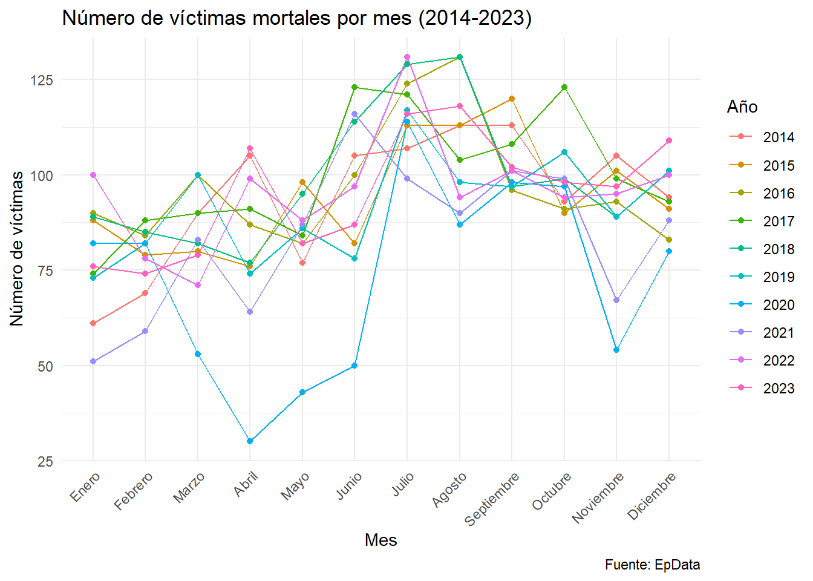
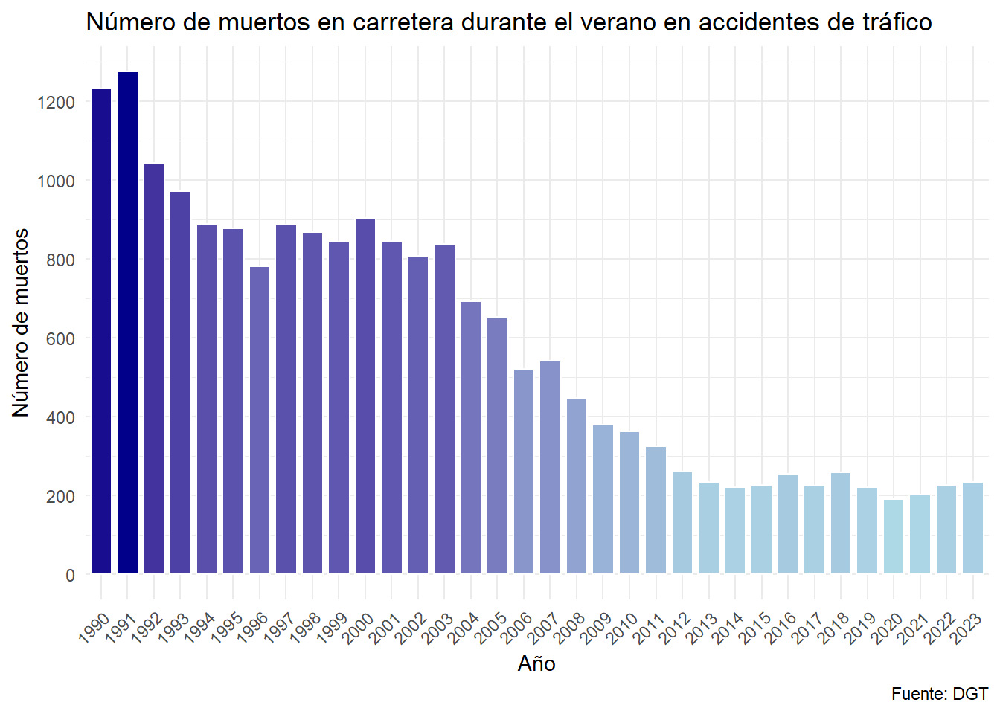
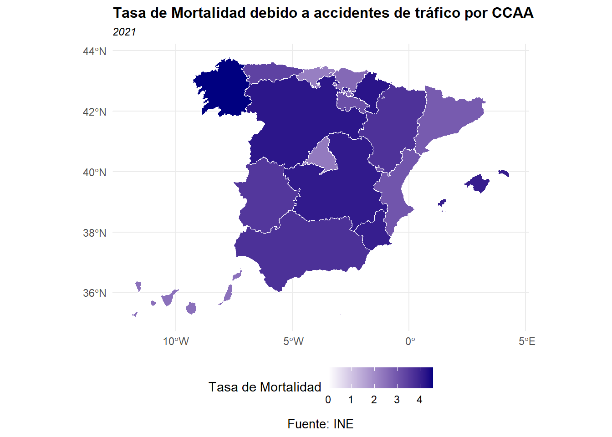
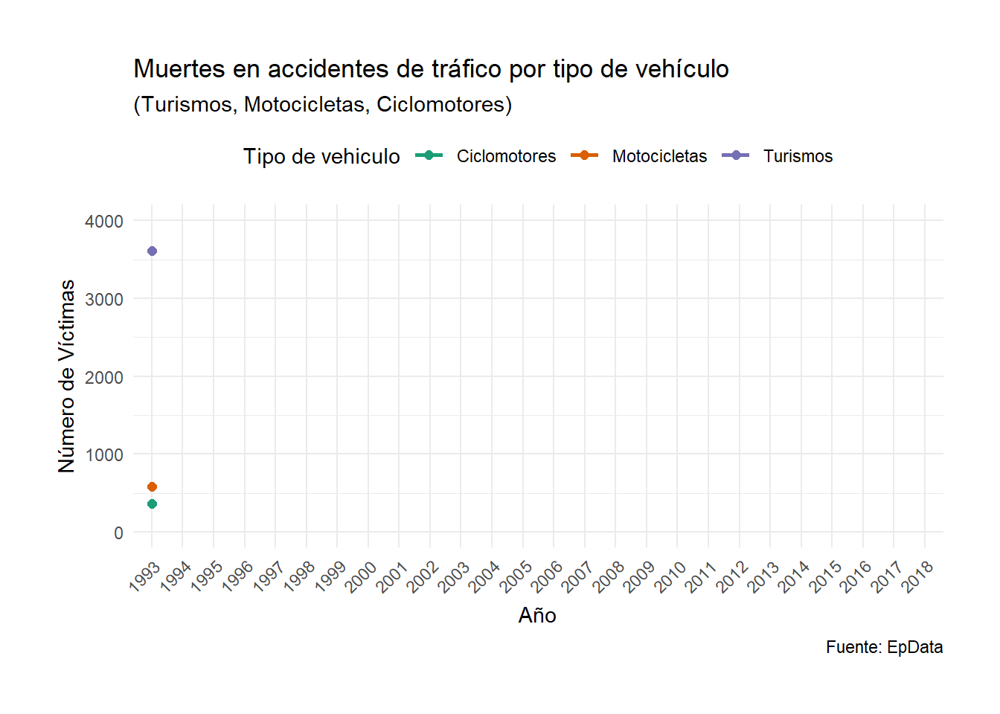
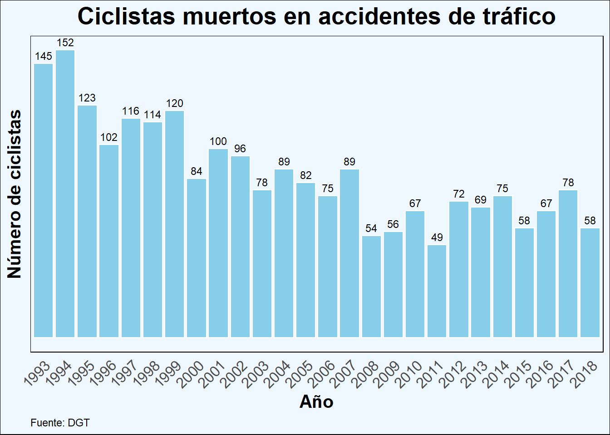
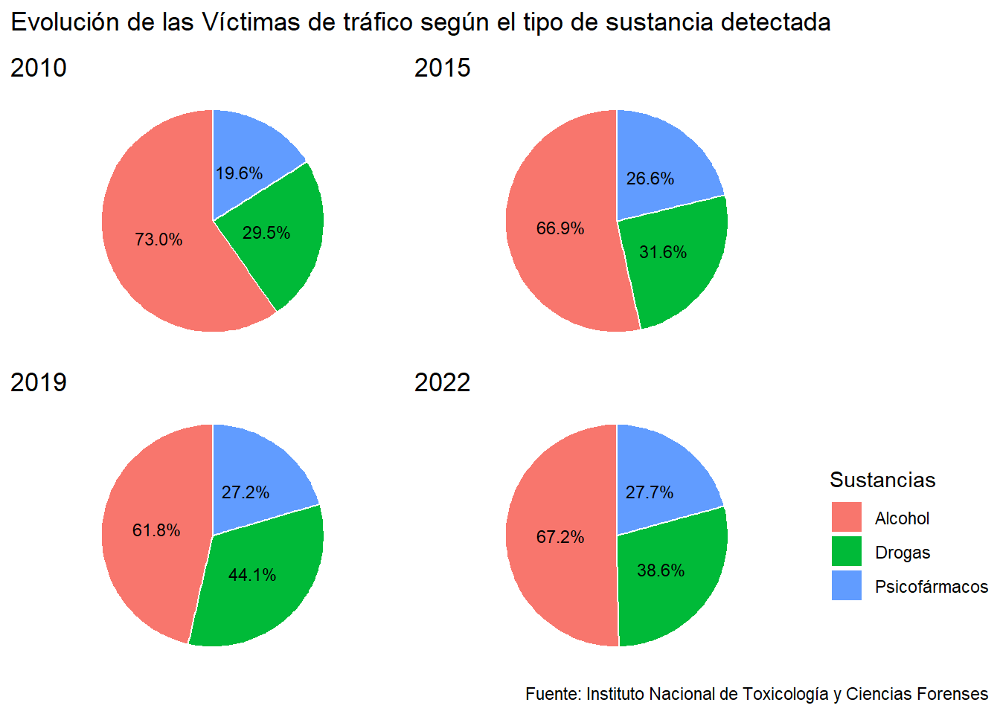
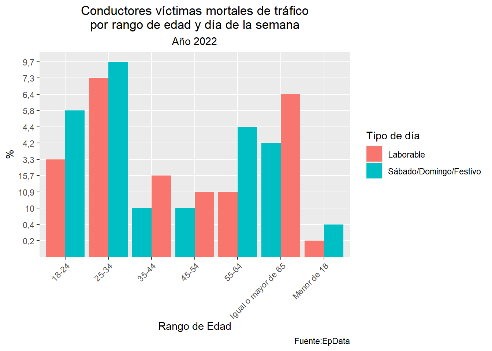

Hoy en día, los accidentes de tráfico son lamentablemente una realidad cotidiana que debería inquietarnos profundamente. Año tras año, perdemos a un considerable número de personas en las carreteras, y es doloroso constatar que muchas de ellas son víctimas inocentes. La magnitud de estas tragedias se refleja en las cifras, especialmente en las vías convencionales y, de manera predominante, entre los usuarios de turismos.
Las causas subyacentes de estos accidentes abarcan desde simples distracciones hasta un manejo inapropiado del vehículo, pero destacan de manera alarmante el consumo de alcohol y drogas, así como el uso irresponsable de los teléfonos móviles.
En este escenario preocupante, es fundamental reconocer que nos enfrentamos a un problema grave que va más allá de las meras estadísticas. La conciencia colectiva, la educación vial y un cambio en las actitudes hacia la conducción son elementos cruciales para revertir esta trágica tendencia y preservar vidas en nuestras carreteras
Datos
Me he enfocado en recopilar información sobre las víctimas para llevar a cabo un análisis de la evolución de los accidentes de tráfico. Principalmente, he obtenido los datos de fuentes como el Instituto Nacional de Estadística (INE), la Dirección General de Tráfico (DGT) y EpData.
Análisis de las víctimas en los accidentes de tráfico
En la fase inicial del estudio, nos enfocaremos en analizar las víctimas de accidentes de tráfico con el objetivo de determinar las épocas del año en las que se registran mayores incidentes. Exploraremos detalladamente los patrones estacionales para comprender cómo festividades u otros factores pueden influir en el aumento de estas tragedias viales.
Vamos a explorar las Comunidades autónomas con mayor incidencia de víctimas en accidentes de tráfico, así como analizar qué tipos de vías están asociadas con un mayor número de víctimas, identificando aquellas que son consideradas más peligrosas. Además, examinaremos las cifras de víctimas según el tipo de vehículo involucrado, prestando especial atención al número de ciclistas fallecidos.
En el ámbito de las sustancias detectadas en las víctimas de accidentes de tráfico, también analizaremos cuáles son las más comúnmente identificadas. Por último, exploraremos el rango de edad que representa la mayoría de las víctimas en estos incidentes.
Este análisis nos permitirá obtener una visión más completa de los factores que contribuyen a la gravedad de los accidentes de tráfico y facilitará la identificación de áreas de enfoque para implementar medidas de prevención y seguridad.
Número de víctimas mensuales en accidentes de tráfico (2014-2023)
Código
##Numero de victimas mortales por mes (2014-2023)library(tidyverse)datos_muertos30<-"./Datos/Datos_muertos30.csv"datos_muertos30<- rio::import(datos_muertos30)datos_muertos30 <- datos_muertos30 %>%mutate(Periodo =factor(Periodo, levels =c("Enero", "Febrero", "Marzo", "Abril", "Mayo", "Junio", "Julio", "Agosto", "Septiembre", "Octubre", "Noviembre", "Diciembre")))p1<-ggplot(datos_muertos30, aes(x = Periodo, y = Victimas_mortales, group = Año, color =factor(Año))) +geom_line() +geom_point() +labs(title ="Número de víctimas mortales por mes (2014-2023)",x ="Mes",y ="Número de víctimas", color ="Año", caption ="Fuente: EpData") +theme_minimal() +theme(axis.text.x =element_text(angle =45, hjust =1))p1

En el análisis gráfico que abarca desde 2014 hasta 2023, se revelan patrones significativos en las víctimas de accidentes de tráfico. Destaca el aumento de incidentes durante los meses de verano, llegando a alcanzar hasta 130 víctimas en un mes, mientras que se observa una reducción durante la pandemia. Estos hallazgos subrayan la importancia de comprender las tendencias estacionales para implementar medidas preventivas y campañas de concientización efectivas.
Número de víctimas durante los meses de Verano
Observando el gráfico previo, queda claro que los meses de verano destacan como la época del año en la que se registran el mayor número de víctimas por accidentes de tráfico. En respuesta a este patrón identificado, he hecho un gráfico específico que ilustra la evolución de las víctimas a lo largo del Verano. Este nuevo gráfico proporciona una visión más detallada y específica sobre cómo se distribuyen las incidencias a lo largo de los meses de verano, permitiéndonos comprender mejor los factores subyacentes y facilitando la implementación de estrategias focalizadas en la prevención y seguridad vial durante esta temporada crítica.
Código
muertes_verano<-"./Datos/muertes_verano.csv"datos2<- rio::import(muertes_verano)datos2<-drop_na(datos2)p3<-ggplot(datos2, aes(x =factor(Año), y = Muertos, fill = Muertos)) +geom_bar(stat ="identity", color ="white", width =0.8) +scale_fill_gradient(low ="lightblue", high ="darkblue") +labs(title ="Número de muertos en carretera durante el verano en accidentes de tráfico",x ="Año",y ="Número de muertos", caption ="Fuente: DGT") +theme_minimal() +theme(axis.text.x =element_text(angle =45, hjust =1),legend.position ="none") +scale_y_continuous(breaks =seq(0, max(datos2$Muertos), by =200)) p3

En este gráfico, se analiza la evolución de las víctimas en accidentes de tráfico durante los meses de verano, observando una marcada tendencia decreciente a lo largo de los años.
En el año 1990, el número de víctimas superaba las 1200, destacando un panorama preocupante. Sin embargo, a medida que transcurren los años, se evidencia una reducción sustancial gracias a la implementación de medidas de seguridad más rigurosas, el aumento de la concienciación pública y los avances en los sistemas de seguridad de los vehículos.
Esta transformación positiva es evidente al observar que, en el verano de 2023, el número de víctimas se sitúa alrededor de 200. Aunque esta cifra refleja una disminución considerable, persiste como un desafío significativo que exige atención continua. La combinación de esfuerzos en regulaciones más estrictas, concienciación ciudadana y tecnologías avanzadas en seguridad vehicular ha contribuido de manera tangible a esta mejora, subrayando la importancia de mantener y fortalecer estas iniciativas para seguir abordando este grave problema.
Número de victimas en accidentes de tráficos por Comunidades Autónomas
Código
datos3<-"./Datos/46689 (2).csv"datos3<- rio::import(datos3)library(sf)library(tidyverse)library(pjpv.curso.R.2022)### En la columna Total queremos poner un punto en vez de una coma datos3 <- datos3%>%mutate(Total = stringr::str_replace(Total, "," , "." ))#- Cambiamos el nombre de las columnas datos3<- datos3%>%rename(Tasa_Mortalidad = Total) %>%rename(CCAA = Comunidad_Autonomas)###Separamos la columna de CCAA en dos Columnas, una que muestre el código y otra el nombre de la Comunidad Autonoma datos3<- datos3 %>% tidyr::separate(CCAA, sep =" ",into =c("ine_ccaa", "ine_ccaa.n"), extra ="merge")datos3<-drop_na(datos3) #quitamos el total nacional, ya que no se van a utilizardatos3<- datos3 %>%filter(Edades =="Todas las edades") %>%filter( Sexo =="Total") %>%filter(Periodo =="2021") ##cogemos Todas la Edades, del sexo queremos el total y elegimos el año más reciente que es 2021###Cargamos las geometrías y elegimos las variables que nos interesandf_geo_prov <- pjpv.curso.R.2022::LAU2_prov_2020_canariasdf_geo_prov <- df_geo_prov %>%select(ine_prov, ine_prov.n, ine_ccaa, ine_ccaa.n)##Agregamos geometrías de las Comunidades Autonomas df_geo_ccaa <- df_geo_prov %>%group_by(ine_ccaa, ine_ccaa.n) %>%summarize()df <-left_join(df_geo_ccaa, datos3, by =c("ine_ccaa"="ine_ccaa"))names(df)#> [1] "ine_ccaa" "ine_ccaa.n.x" "geometry" "Total Nacional" #> [5] "ine_ccaa.n.y" "Edades" "Sexo" "Periodo" #> [9] "Tasa_Mortalidad"##Calculamos los Centroideslibrary(sf)df_geo_ccaa <-cbind(df_geo_ccaa, st_coordinates(st_centroid(df_geo_ccaa$geometry)))##Juntamos los datos con las geometrías df<-left_join(df_geo_ccaa, datos3, by =c("ine_ccaa"="ine_ccaa"))df$Tasa_Mortalidad <-as.numeric(df$Tasa_Mortalidad)p4 <-ggplot(df) +geom_sf(aes(fill = Tasa_Mortalidad), color ="white", size =0.2) +scale_fill_gradient(low ="white", high ="navyblue", name ="Tasa de Mortalidad") +labs(title ="Tasa de Mortalidad debido a accidentes de tráfico por CCAA",subtitle ="2021", caption ="Fuente: INE") +theme_minimal() +theme(legend.position ="bottom", plot.title =element_text(size =12, face ="bold"),plot.subtitle =element_text(size =9, face ="italic"), plot.caption =element_text(size =10, hjust =0.5)) p4

En el siguiente mapa, se presenta la tasa de mortalidad por accidentes de tráfico en las Comunidades Autónomas para el año 2021.
Destaca que algunas Comunidades muestran una tasa de mortalidad más elevada. Galicia, Castilla y León, Navarra, Castilla La Mancha, las Islas Baleares y Murcia se encuentran entre aquellas con una incidencia más significativa.
Contrastando con ello, se identifican Comunidades con tasas de mortalidad más bajas, entre las que se encuentran Melilla, Cantabria, Comunidad de Madrid, Canarias y País Vasco.
Estas disparidades en las tasas de mortalidad pueden explicarse por varios factores, como el clima y las condiciones meteorológicas, la calidad de las carreteras y la densidad del tráfico. Por ejemplo, regiones con climas extremos o condiciones meteorológicas adversas pueden experimentar un aumento de la peligrosidad en las carreteras. Además, la densidad del tráfico y la calidad de las infraestructuras viales desempeñan un papel crucial en la seguridad vial, afectando directamente las tasas de accidentes y mortalidad.
Número de victimas según el tipo de vía
Código
datos4<-"./Datos/muertes_tipo_via.csv"datos4<- rio::import(datos4) datos4<- datos4 %>%select(!Periodo)library(plotly)p4 <-ggplot(datos4, aes(x = Año)) +geom_line(aes(y = Autopista, color ="Autopista"), size =2) +geom_line(aes(y = Autovia, color ="Autovia"), size =2, linetype ="dashed") +geom_line(aes(y = Carretera_convencional, color ="Carretera Convencional"), size =2, linetype ="dotted") +labs(title ="Número de muertos en accidentes de tráfico\nsegún el tipo de vía", x ="Año", y ="Número de personas", caption ="Fuente: EpData") +scale_color_manual(name ="Tipo de Vía", values =c("Autopista"="#4e79a7", "Autovia"="#f28e2b", "Carretera Convencional"="#59a14f")) +scale_y_continuous(breaks =seq(0, max(datos4$Carretera_convencional), 500), limits =c(0, max(datos4$Carretera_convencional) +500)) +theme_minimal() +theme(plot.title =element_text(size =12, face ="bold", hjust =0.5),axis.title.x =element_text(size =10),axis.title.y =element_text(size =10),axis.text.x =element_text(size =8), axis.text.y =element_text(size =8), legend.title =element_text(size =10),legend.text =element_text(size =10),panel.grid.major =element_line(color ="white", size =0.5),panel.grid.minor =element_blank(),panel.border =element_blank(),panel.background =element_blank(),plot.margin =margin(20, 20, 20, 20) )grafico_interactivo <-ggplotly(p4)grafico_interactivo
El siguiente gráfico ofrece una visión detallada de las víctimas por accidentes de tráfico según el tipo de vía, destacando patrones significativos que revelan diferencias sustanciales en la seguridad vial.
Se observa claramente que las autopistas y autovías presentan menores tasas de víctimas en comparación con las vías convencionales. Esta disparidad pone de manifiesto que las carreteras convencionales tienden a ser más peligrosas, registrando un mayor número de víctimas en accidentes.
Es importante señalar que, a lo largo de los años, se observa una reducción progresiva del número de víctimas en todos los tipos de vías. Este fenómeno se atribuye a mejoras significativas en la calidad y seguridad de las carreteras. Avances en infraestructuras, implementación de medidas de seguridad más efectivas y campañas de concientización han contribuido a este descenso.
Víctimas según el tipo de vehículo
Código
library(gganimate)library(transformr)library(tidyverse)datos5<-"./Datos/Muertes_tipo_vehiculo.csv"datos5<- rio::import(datos5)datos5<- datos5 %>%select(!Periodo)datos_longer<-pivot_longer(datos5, cols =-Año, names_to ="Tipo_Vehiculo", values_to ="Victimas")datos_longer$Año <-as.factor(datos_longer$Año)anim <-ggplot(datos_longer, aes(x = Año, y = Victimas, group = Tipo_Vehiculo, color = Tipo_Vehiculo)) +geom_line(size =1, linetype ="solid") +geom_point(size =2) +transition_reveal(as.integer(Año)) +labs(title ="Muertes en accidentes de tráfico por tipo de vehículo",subtitle ="(Turismos, Motocicletas, Ciclomotores)",x ="Año",y ="Número de Víctimas", caption ="Fuente: EpData") +theme_minimal() +theme(legend.position ="top", plot.margin =margin(1, 1, 1, 1, "cm")) +scale_color_brewer(palette ="Dark2") +theme(axis.text.x =element_text(angle =45, hjust =1)) +guides(color =guide_legend(title ="Tipo de vehiculo")) +ylim(0, 4000)anim

En el siguiente gráfico se representa la evolución de las víctimas en accidentes de tráfico clasificados por tipo de vehículo, centrándonos en turismos, motocicletas y ciclomotores. Se observa una importante disminución en el número de víctimas por accidentes de Turismos a lo largo de los años. En 1993, se registraban alrededor de 3500 víctimas, cifra que ha experimentado una marcada reducción hasta alcanzar aproximadamente 900 víctimas en el año 2018.
Es importante señalar que, a diferencia de los accidentes de Turismos, los incidentes relacionados con motocicletas muestran cifras significativas de víctimas a lo largo del periodo analizado. Aunque los accidentes de turismos han experimentado una disminución, las cifras de víctimas por accidentes de motocicletas se han mantenido relativamente estables a lo largo de los años. De manera similar, los accidentes de ciclomotores también han mantenido una tendencia constante en cuanto al número de víctimas.
Ciclistas fallecidos en accidentes de tráfico
Código
library(viridis)datos6 <-"./Datos/ciclistas_fallecidos.csv"datos6 <- rio::import(datos6)datos6$Año <-as.factor(datos6$Año)p6 <-ggplot(datos6, aes(x = Año, y = Ciclistas_muertos)) +geom_bar(stat ="identity", color ="white", size =0.5, fill ="skyblue") +geom_text(aes(label = Ciclistas_muertos), vjust =-0.5, size =3) +labs(title ="Ciclistas muertos en accidentes de tráfico",x ="Año",y ="Número de ciclistas",caption ="Fuente: DGT") +theme_minimal() +theme(panel.grid.major =element_blank(),panel.grid.minor =element_blank(),axis.text.x =element_text(angle =45, hjust =1),legend.position ="none",plot.title =element_text(hjust =0.5, size =20, face ="bold"),axis.title =element_text(size =15, face ="bold"),axis.text =element_text(size =12),axis.text.y =element_blank(), axis.ticks.y =element_blank(), plot.caption =element_text(hjust =0),panel.background =element_rect(fill ="aliceblue"), plot.background =element_rect(fill ="aliceblue")) +scale_fill_viridis_d()p6

El gráfico refleja la evolución de víctimas en accidentes con ciclistas, revelando una disminución a lo largo de los años gracias a medidas de seguridad, como mantener distancia al adelantar. En 1993, 145 ciclistas fallecieron, cifra que se redujo a 58 en 2018. Aunque hay avances, la magnitud de las pérdidas sigue siendo significativa, destacando la importancia continua de fortalecer medidas de seguridad y concienciación para proteger a los ciclistas en las vías.
Víctimas según el tipo de sustancia detectada
Código
datos7<-"./Datos/Sustancias.csv"datos7<- rio::import(datos7)datos7<- datos7 %>%select(!Periodo)datos_longer7<-pivot_longer( cols =2:4, datos7, names_to ="Sustancia", values_to ="Porcentaje")datos_longer7 <- datos_longer7 %>%mutate(Porcentaje =as.numeric(gsub(",", ".", Porcentaje)))d_2010<- datos_longer7 %>%filter(Año ==2010)p_2010 <-ggplot(d_2010, aes(x ="", y = Porcentaje, fill = Sustancia)) +geom_col(width =1, color ="white") +geom_text(aes(label =sprintf("%.1f%%", Porcentaje), y = Porcentaje), position =position_stack(vjust =0.5), color ="black", size =3) +coord_polar(theta ="y") +scale_y_continuous(breaks =NULL) +theme_void() +labs(fill ="Sustancias", y ="Porcentaje")+ggtitle("2010") +guides(fill =FALSE)d_2015<- datos_longer7 %>%filter(Año ==2015)p_2015<-ggplot(d_2015, aes(x ="", y = Porcentaje, fill = Sustancia)) +geom_col(width =1, color ="white") +geom_text(aes(label =sprintf("%.1f%%", Porcentaje), y = Porcentaje), position =position_stack(vjust =0.5), color ="black", size =3) +coord_polar(theta ="y") +scale_y_continuous(breaks =NULL) +theme_void() +labs(fill ="Sustancias", y ="Porcentaje") +ggtitle("2015") +guides(fill =FALSE)d_2019<- datos_longer7 %>%filter(Año ==2019)p_2019 <-ggplot(d_2019, aes(x ="", y = Porcentaje, fill = Sustancia)) +geom_col(width =1, color ="white") +geom_text(aes(label =sprintf("%.1f%%", Porcentaje), y = Porcentaje), position =position_stack(vjust =0.5), color ="black", size =3) +coord_polar(theta ="y") +scale_y_continuous(breaks =NULL) +theme_void() +labs(fill ="Sustancias", y ="Porcentaje") +ggtitle("2019") +guides(fill =FALSE)d_2022<- datos_longer7 %>%filter(Año ==2022)p_2022 <-ggplot(d_2022, aes(x ="", y = Porcentaje, fill = Sustancia)) +geom_col(width =1, color ="white") +geom_text(aes(label =sprintf("%.1f%%", Porcentaje), y = Porcentaje), position =position_stack(vjust =0.5), color ="black", size =3) +coord_polar(theta ="y") +scale_y_continuous(breaks =NULL) +theme_void() +labs(fill ="Sustancias", y ="Porcentaje") +ggtitle("2022")library(patchwork)library(gridExtra)library(cowplot)wrap<-wrap_plots(p_2010, p_2015, p_2019, p_2022, ncol =2, nrow =2,widths =c(1, 1), heights =c(1, 1)) +plot_annotation(title ="Evolución de las Víctimas de tráfico según el tipo de sustancia detectada", caption ="Fuente: Instituto Nacional de Toxicología y Ciencias Forenses")wrap

En este gráfico de pastel, se destaca que el alcohol prevalece como la sustancia más detectada en las víctimas de accidentes de tráfico. Aunque se observa una disminución en su porcentaje, pasando del 73% en 2010 al 68% en 2022, sigue siendo la sustancia predominante.
En segundo lugar se encuentran las drogas, con un aumento progresivo de un 30% en el 2010 a un 39% en 2022. Por otro lado, los psicofármacos, a pesar de ser la sustancia menos detectada, representan un 28% en 2022, mostrando un incremento desde el 20% en 2010, al igual que las drogas, que han pasado de un 20% en el año 2010 al 39% en 2022.
En resumen, se concluye que el alcohol, las drogas y los psicofármacos son responsables de una proporción significativa de accidentes de tráfico, destacando la importancia de abordar estas problemáticas para mejorar la seguridad vial.
Conductores victimas por rangos de edad y día de la semana
Código
datos8<-"./Datos/datos8.csv"datos8<- rio::import(datos8)datos8<- datos8 %>%select(!Periodo)datos_long8<-pivot_longer(datos8, cols =3:4, names_to ="Tipo_Dia", values_to ="Rango_Edad")datos_long8$Parámetro <-factor(datos_long8$Parámetro, levels =unique(datos_long8$Parámetro))p8 <-ggplot(datos_long8, aes(x = Parámetro, y = Rango_Edad, fill = Tipo_Dia)) +geom_bar(stat ="identity", position ="dodge") +labs(title ="Conductores víctimas mortales de tráfico\n por rango de edad y día de la semana ",subtitle ="Año 2022",x ="Rango de Edad",y ="%",fill ="Tipo de día", caption ="Fuente:EpData") +theme(plot.title =element_text(hjust =0.5),plot.subtitle =element_text(hjust =0.5),axis.text.x =element_text(angle =45, hjust =1)) p8

En este gráfico, se evidencia que la mayoría de las víctimas de accidentes de tráfico en el año 2022 pertenecen al grupo de edad de 25 a 34 años, seguido por las personas de 65 años.
En contraste, la proporción más baja de víctimas se registra en individuos menores de 18 años, quienes, debido a su edad, no están autorizados legalmente para conducir turismos. Estos datos proporcionan una visión detallada de la distribución de las víctimas en accidentes de tráfico, destacando patrones significativos según grupos de edad y días de la semana.
Conclusión
En conclusión, los accidentes de tráfico constituyen una lamentable realidad que cobra un considerable número de vidas cada año. Las causas, desde distracciones hasta el consumo de sustancias, destacan la urgencia de abordar el problema más allá de las estadísticas.
El análisis detallado revela patrones estacionales y geográficos, señalando áreas clave de enfoque para prevenir tragedias. La evolución positiva en medidas de seguridad ha contribuido a la reducción de víctimas, aunque desafíos persisten en ciertos tipos de vehículos.
La prevalencia de alcohol, drogas y psicofármacos subraya la necesidad de abordar estas problemáticas para mejorar la seguridad vial. La distribución por edad destaca la vulnerabilidad de adultos jóvenes.
Ejecutar el código
---title: "ACCIDENTES DE TRÁFICO"author: - name: Javier Belenguer affiliation: Universitat de València affiliation-url: https://www.uv.esdate: 2023-12-20 #--categories: [trabajo BigData, Accidentes de tráfico] #--image: "./imagenes/pavicon.png"title-block-banner: true #- {true, false, "green","#AA0000"}title-block-banner-color: "red" #-"#FFFFFF" toc-depth: 3smooth-scroll: trueformat: html: #backgroundcolor: "#F1F3F4" #embed-resources: true link-external-newwindow: true #css: ./assets/my_css_file.css #- CUIDADO!!!!code-tools: truecode-link: true---# IntroducciónHoy en día, los accidentes de tráfico son lamentablemente una realidad cotidiana que debería inquietarnos profundamente. Año tras año, perdemos a un considerable número de personas en las carreteras, y es doloroso constatar que muchas de ellas son víctimas inocentes. La magnitud de estas tragedias se refleja en las cifras, especialmente en las vías convencionales y, de manera predominante, entre los usuarios de turismos. Las causas subyacentes de estos accidentes abarcan desde simples distracciones hasta un manejo inapropiado del vehículo, pero destacan de manera alarmante el consumo de alcohol y drogas, así como el uso irresponsable de los teléfonos móviles. En este escenario preocupante, es fundamental reconocer que nos enfrentamos a un problema grave que va más allá de las meras estadísticas. La conciencia colectiva, la educación vial y un cambio en las actitudes hacia la conducción son elementos cruciales para revertir esta trágica tendencia y preservar vidas en nuestras carreteras\\# DatosMe he enfocado en recopilar información sobre las víctimas para llevar a cabo un análisis de la evolución de los accidentes de tráfico. Principalmente, he obtenido los datos de fuentes como el Instituto Nacional de Estadística (INE), la Dirección General de Tráfico (DGT) y EpData.\\# Análisis de las víctimas en los accidentes de tráficoEn la fase inicial del estudio, nos enfocaremos en analizar las víctimas de accidentes de tráfico con el objetivo de determinar las épocas del año en las que se registran mayores incidentes. Exploraremos detalladamente los patrones estacionales para comprender cómo festividades u otros factores pueden influir en el aumento de estas tragedias viales.Vamos a explorar las Comunidades autónomas con mayor incidencia de víctimas en accidentes de tráfico, así como analizar qué tipos de vías están asociadas con un mayor número de víctimas, identificando aquellas que son consideradas más peligrosas. Además, examinaremos las cifras de víctimas según el tipo de vehículo involucrado, prestando especial atención al número de ciclistas fallecidos.En el ámbito de las sustancias detectadas en las víctimas de accidentes de tráfico, también analizaremos cuáles son las más comúnmente identificadas. Por último, exploraremos el rango de edad que representa la mayoría de las víctimas en estos incidentes.Este análisis nos permitirá obtener una visión más completa de los factores que contribuyen a la gravedad de los accidentes de tráfico y facilitará la identificación de áreas de enfoque para implementar medidas de prevención y seguridad.\#### **Número de víctimas mensuales en accidentes de tráfico (2014-2023)** ```{r}##Numero de victimas mortales por mes (2014-2023)library(tidyverse)datos_muertos30<-"./Datos/Datos_muertos30.csv"datos_muertos30<- rio::import(datos_muertos30)datos_muertos30 <- datos_muertos30 %>%mutate(Periodo =factor(Periodo, levels =c("Enero", "Febrero", "Marzo", "Abril", "Mayo", "Junio", "Julio", "Agosto", "Septiembre", "Octubre", "Noviembre", "Diciembre")))p1<-ggplot(datos_muertos30, aes(x = Periodo, y = Victimas_mortales, group = Año, color =factor(Año))) +geom_line() +geom_point() +labs(title ="Número de víctimas mortales por mes (2014-2023)",x ="Mes",y ="Número de víctimas", color ="Año", caption ="Fuente: EpData") +theme_minimal() +theme(axis.text.x =element_text(angle =45, hjust =1))p1```\En el análisis gráfico que abarca desde 2014 hasta 2023, se revelan patrones significativos en las víctimas de accidentes de tráfico. Destaca el aumento de incidentes durante los meses de verano, llegando a alcanzar hasta 130 víctimas en un mes, mientras que se observa una reducción durante la pandemia. Estos hallazgos subrayan la importancia de comprender las tendencias estacionales para implementar medidas preventivas y campañas de concientización efectivas.\\#### **Número de víctimas durante los meses de Verano**Observando el gráfico previo, queda claro que los meses de verano destacan como la época del año en la que se registran el mayor número de víctimas por accidentes de tráfico. En respuesta a este patrón identificado, he hecho un gráfico específico que ilustra la evolución de las víctimas a lo largo del Verano. Este nuevo gráfico proporciona una visión más detallada y específica sobre cómo se distribuyen las incidencias a lo largo de los meses de verano, permitiéndonos comprender mejor los factores subyacentes y facilitando la implementación de estrategias focalizadas en la prevención y seguridad vial durante esta temporada crítica.````{r}muertes_verano<-"./Datos/muertes_verano.csv"datos2<- rio::import(muertes_verano)datos2<-drop_na(datos2)p3<-ggplot(datos2, aes(x =factor(Año), y = Muertos, fill = Muertos)) +geom_bar(stat ="identity", color ="white", width =0.8) +scale_fill_gradient(low ="lightblue", high ="darkblue") +labs(title ="Número de muertos en carretera durante el verano en accidentes de tráfico",x ="Año",y ="Número de muertos", caption ="Fuente: DGT") +theme_minimal() +theme(axis.text.x =element_text(angle =45, hjust =1),legend.position ="none") +scale_y_continuous(breaks =seq(0, max(datos2$Muertos), by =200)) p3````\En este gráfico, se analiza la evolución de las víctimas en accidentes de tráfico durante los meses de verano, observando una marcada tendencia decreciente a lo largo de los años. En el año 1990, el número de víctimas superaba las 1200, destacando un panorama preocupante. Sin embargo, a medida que transcurren los años, se evidencia una reducción sustancial gracias a la implementación de medidas de seguridad más rigurosas, el aumento de la concienciación pública y los avances en los sistemas de seguridad de los vehículos.Esta transformación positiva es evidente al observar que, en el verano de 2023, el número de víctimas se sitúa alrededor de 200. Aunque esta cifra refleja una disminución considerable, persiste como un desafío significativo que exige atención continua. La combinación de esfuerzos en regulaciones más estrictas, concienciación ciudadana y tecnologías avanzadas en seguridad vehicular ha contribuido de manera tangible a esta mejora, subrayando la importancia de mantener y fortalecer estas iniciativas para seguir abordando este grave problema.\\#### **Número de victimas en accidentes de tráficos por Comunidades Autónomas** ````{r}datos3<-"./Datos/46689 (2).csv"datos3<- rio::import(datos3)library(sf)library(tidyverse)library(pjpv.curso.R.2022)### En la columna Total queremos poner un punto en vez de una coma datos3 <- datos3%>%mutate(Total = stringr::str_replace(Total, "," , "." ))#- Cambiamos el nombre de las columnas datos3<- datos3%>%rename(Tasa_Mortalidad = Total) %>%rename(CCAA = Comunidad_Autonomas)###Separamos la columna de CCAA en dos Columnas, una que muestre el código y otra el nombre de la Comunidad Autonoma datos3<- datos3 %>% tidyr::separate(CCAA, sep =" ",into =c("ine_ccaa", "ine_ccaa.n"), extra ="merge")datos3<-drop_na(datos3) #quitamos el total nacional, ya que no se van a utilizardatos3<- datos3 %>%filter(Edades =="Todas las edades") %>%filter( Sexo =="Total") %>%filter(Periodo =="2021") ##cogemos Todas la Edades, del sexo queremos el total y elegimos el año más reciente que es 2021###Cargamos las geometrías y elegimos las variables que nos interesandf_geo_prov <- pjpv.curso.R.2022::LAU2_prov_2020_canariasdf_geo_prov <- df_geo_prov %>%select(ine_prov, ine_prov.n, ine_ccaa, ine_ccaa.n)##Agregamos geometrías de las Comunidades Autonomas df_geo_ccaa <- df_geo_prov %>%group_by(ine_ccaa, ine_ccaa.n) %>%summarize()df <-left_join(df_geo_ccaa, datos3, by =c("ine_ccaa"="ine_ccaa"))names(df)##Calculamos los Centroideslibrary(sf)df_geo_ccaa <-cbind(df_geo_ccaa, st_coordinates(st_centroid(df_geo_ccaa$geometry)))##Juntamos los datos con las geometrías df<-left_join(df_geo_ccaa, datos3, by =c("ine_ccaa"="ine_ccaa"))df$Tasa_Mortalidad <-as.numeric(df$Tasa_Mortalidad)p4 <-ggplot(df) +geom_sf(aes(fill = Tasa_Mortalidad), color ="white", size =0.2) +scale_fill_gradient(low ="white", high ="navyblue", name ="Tasa de Mortalidad") +labs(title ="Tasa de Mortalidad debido a accidentes de tráfico por CCAA",subtitle ="2021", caption ="Fuente: INE") +theme_minimal() +theme(legend.position ="bottom", plot.title =element_text(size =12, face ="bold"),plot.subtitle =element_text(size =9, face ="italic"), plot.caption =element_text(size =10, hjust =0.5)) p4````\En el siguiente mapa, se presenta la tasa de mortalidad por accidentes de tráfico en las Comunidades Autónomas para el año 2021.Destaca que algunas Comunidades muestran una tasa de mortalidad más elevada. Galicia, Castilla y León, Navarra, Castilla La Mancha, las Islas Baleares y Murcia se encuentran entre aquellas con una incidencia más significativa.Contrastando con ello, se identifican Comunidades con tasas de mortalidad más bajas, entre las que se encuentran Melilla, Cantabria, Comunidad de Madrid, Canarias y País Vasco.Estas disparidades en las tasas de mortalidad pueden explicarse por varios factores, como el clima y las condiciones meteorológicas, la calidad de las carreteras y la densidad del tráfico. Por ejemplo, regiones con climas extremos o condiciones meteorológicas adversas pueden experimentar un aumento de la peligrosidad en las carreteras. Además, la densidad del tráfico y la calidad de las infraestructuras viales desempeñan un papel crucial en la seguridad vial, afectando directamente las tasas de accidentes y mortalidad.\\#### **Número de victimas según el tipo de vía**````{r}datos4<-"./Datos/muertes_tipo_via.csv"datos4<- rio::import(datos4) datos4<- datos4 %>%select(!Periodo)library(plotly)p4 <-ggplot(datos4, aes(x = Año)) +geom_line(aes(y = Autopista, color ="Autopista"), size =2) +geom_line(aes(y = Autovia, color ="Autovia"), size =2, linetype ="dashed") +geom_line(aes(y = Carretera_convencional, color ="Carretera Convencional"), size =2, linetype ="dotted") +labs(title ="Número de muertos en accidentes de tráfico\nsegún el tipo de vía", x ="Año", y ="Número de personas", caption ="Fuente: EpData") +scale_color_manual(name ="Tipo de Vía", values =c("Autopista"="#4e79a7", "Autovia"="#f28e2b", "Carretera Convencional"="#59a14f")) +scale_y_continuous(breaks =seq(0, max(datos4$Carretera_convencional), 500), limits =c(0, max(datos4$Carretera_convencional) +500)) +theme_minimal() +theme(plot.title =element_text(size =12, face ="bold", hjust =0.5),axis.title.x =element_text(size =10),axis.title.y =element_text(size =10),axis.text.x =element_text(size =8), axis.text.y =element_text(size =8), legend.title =element_text(size =10),legend.text =element_text(size =10),panel.grid.major =element_line(color ="white", size =0.5),panel.grid.minor =element_blank(),panel.border =element_blank(),panel.background =element_blank(),plot.margin =margin(20, 20, 20, 20) )grafico_interactivo <-ggplotly(p4)grafico_interactivo````\El siguiente gráfico ofrece una visión detallada de las víctimas por accidentes de tráfico según el tipo de vía, destacando patrones significativos que revelan diferencias sustanciales en la seguridad vial.Se observa claramente que las autopistas y autovías presentan menores tasas de víctimas en comparación con las vías convencionales. Esta disparidad pone de manifiesto que las carreteras convencionales tienden a ser más peligrosas, registrando un mayor número de víctimas en accidentes.Es importante señalar que, a lo largo de los años, se observa una reducción progresiva del número de víctimas en todos los tipos de vías. Este fenómeno se atribuye a mejoras significativas en la calidad y seguridad de las carreteras. Avances en infraestructuras, implementación de medidas de seguridad más efectivas y campañas de concientización han contribuido a este descenso.\\#### **Víctimas según el tipo de vehículo**````{r}library(gganimate)library(transformr)library(tidyverse)datos5<-"./Datos/Muertes_tipo_vehiculo.csv"datos5<- rio::import(datos5)datos5<- datos5 %>%select(!Periodo)datos_longer<-pivot_longer(datos5, cols =-Año, names_to ="Tipo_Vehiculo", values_to ="Victimas")datos_longer$Año <-as.factor(datos_longer$Año)anim <-ggplot(datos_longer, aes(x = Año, y = Victimas, group = Tipo_Vehiculo, color = Tipo_Vehiculo)) +geom_line(size =1, linetype ="solid") +geom_point(size =2) +transition_reveal(as.integer(Año)) +labs(title ="Muertes en accidentes de tráfico por tipo de vehículo",subtitle ="(Turismos, Motocicletas, Ciclomotores)",x ="Año",y ="Número de Víctimas", caption ="Fuente: EpData") +theme_minimal() +theme(legend.position ="top", plot.margin =margin(1, 1, 1, 1, "cm")) +scale_color_brewer(palette ="Dark2") +theme(axis.text.x =element_text(angle =45, hjust =1)) +guides(color =guide_legend(title ="Tipo de vehiculo")) +ylim(0, 4000)anim`````\En el siguiente gráfico se representa la evolución de las víctimas en accidentes de tráfico clasificados por tipo de vehículo, centrándonos en turismos, motocicletas y ciclomotores. Se observa una importante disminución en el número de víctimas por accidentes de Turismos a lo largo de los años. En 1993, se registraban alrededor de 3500 víctimas, cifra que ha experimentado una marcada reducción hasta alcanzar aproximadamente 900 víctimas en el año 2018.Es importante señalar que, a diferencia de los accidentes de Turismos, los incidentes relacionados con motocicletas muestran cifras significativas de víctimas a lo largo del periodo analizado. Aunque los accidentes de turismos han experimentado una disminución, las cifras de víctimas por accidentes de motocicletas se han mantenido relativamente estables a lo largo de los años. De manera similar, los accidentes de ciclomotores también han mantenido una tendencia constante en cuanto al número de víctimas.\\#### **Ciclistas fallecidos en accidentes de tráfico**````{r}library(viridis)datos6 <-"./Datos/ciclistas_fallecidos.csv"datos6 <- rio::import(datos6)datos6$Año <-as.factor(datos6$Año)p6 <-ggplot(datos6, aes(x = Año, y = Ciclistas_muertos)) +geom_bar(stat ="identity", color ="white", size =0.5, fill ="skyblue") +geom_text(aes(label = Ciclistas_muertos), vjust =-0.5, size =3) +labs(title ="Ciclistas muertos en accidentes de tráfico",x ="Año",y ="Número de ciclistas",caption ="Fuente: DGT") +theme_minimal() +theme(panel.grid.major =element_blank(),panel.grid.minor =element_blank(),axis.text.x =element_text(angle =45, hjust =1),legend.position ="none",plot.title =element_text(hjust =0.5, size =20, face ="bold"),axis.title =element_text(size =15, face ="bold"),axis.text =element_text(size =12),axis.text.y =element_blank(), axis.ticks.y =element_blank(), plot.caption =element_text(hjust =0),panel.background =element_rect(fill ="aliceblue"), plot.background =element_rect(fill ="aliceblue")) +scale_fill_viridis_d()p6 ```\El gráfico refleja la evolución de víctimas en accidentes con ciclistas, revelando una disminución a lo largo de los años gracias a medidas de seguridad, como mantener distancia al adelantar. En 1993, 145 ciclistas fallecieron, cifra que se redujo a 58 en 2018. Aunque hay avances, la magnitud de las pérdidas sigue siendo significativa, destacando la importancia continua de fortalecer medidas de seguridad y concienciación para proteger a los ciclistas en las vías.\\#### **Víctimas según el tipo de sustancia detectada**````{r}datos7<- "./Datos/Sustancias.csv"datos7<- rio::import(datos7)datos7<- datos7 %>% select(!Periodo)datos_longer7<- pivot_longer( cols = 2:4, datos7, names_to = "Sustancia", values_to = "Porcentaje")datos_longer7 <- datos_longer7 %>% mutate(Porcentaje = as.numeric(gsub(",", ".", Porcentaje)))d_2010<- datos_longer7 %>% filter(Año == 2010)p_2010 <- ggplot(d_2010, aes(x = "", y = Porcentaje, fill = Sustancia)) + geom_col(width = 1, color = "white") + geom_text(aes(label = sprintf("%.1f%%", Porcentaje), y = Porcentaje), position = position_stack(vjust = 0.5), color = "black", size = 3) + coord_polar(theta = "y") + scale_y_continuous(breaks = NULL) + theme_void() + labs(fill = "Sustancias", y = "Porcentaje")+ ggtitle("2010") + guides(fill = FALSE)d_2015<- datos_longer7 %>% filter(Año == 2015)p_2015<- ggplot(d_2015, aes(x = "", y = Porcentaje, fill = Sustancia)) + geom_col(width = 1, color = "white") + geom_text(aes(label = sprintf("%.1f%%", Porcentaje), y = Porcentaje), position = position_stack(vjust = 0.5), color = "black", size = 3) + coord_polar(theta = "y") + scale_y_continuous(breaks = NULL) + theme_void() + labs(fill = "Sustancias", y = "Porcentaje") + ggtitle("2015") + guides(fill = FALSE)d_2019<- datos_longer7 %>% filter(Año == 2019)p_2019 <- ggplot(d_2019, aes(x = "", y = Porcentaje, fill = Sustancia)) + geom_col(width = 1, color = "white") + geom_text(aes(label = sprintf("%.1f%%", Porcentaje), y = Porcentaje), position = position_stack(vjust = 0.5), color = "black", size = 3) + coord_polar(theta = "y") + scale_y_continuous(breaks = NULL) + theme_void() + labs(fill = "Sustancias", y = "Porcentaje") + ggtitle("2019") + guides(fill = FALSE)d_2022<- datos_longer7 %>% filter(Año == 2022)p_2022 <- ggplot(d_2022, aes(x = "", y = Porcentaje, fill = Sustancia)) + geom_col(width = 1, color = "white") + geom_text(aes(label = sprintf("%.1f%%", Porcentaje), y = Porcentaje), position = position_stack(vjust = 0.5), color = "black", size = 3) + coord_polar(theta = "y") + scale_y_continuous(breaks = NULL) + theme_void() + labs(fill = "Sustancias", y = "Porcentaje") + ggtitle("2022")library(patchwork)library(gridExtra)library(cowplot)wrap<- wrap_plots(p_2010, p_2015, p_2019, p_2022, ncol = 2, nrow = 2, widths = c(1, 1), heights = c(1, 1)) + plot_annotation(title = "Evolución de las Víctimas de tráfico según el tipo de sustancia detectada", caption = "Fuente: Instituto Nacional de Toxicología y Ciencias Forenses")wrap ````\En este gráfico de pastel, se destaca que el alcohol prevalece como la sustancia más detectada en las víctimas de accidentes de tráfico. Aunque se observa una disminución en su porcentaje, pasando del 73% en 2010 al 68% en 2022, sigue siendo la sustancia predominante.En segundo lugar se encuentran las drogas, con un aumento progresivo de un 30% en el 2010 a un 39% en 2022. Por otro lado, los psicofármacos, a pesar de ser la sustancia menos detectada, representan un 28% en 2022, mostrando un incremento desde el 20% en 2010, al igual que las drogas, que han pasado de un 20% en el año 2010 al 39% en 2022.En resumen, se concluye que el alcohol, las drogas y los psicofármacos son responsables de una proporción significativa de accidentes de tráfico, destacando la importancia de abordar estas problemáticas para mejorar la seguridad vial.\\ **Conductores victimas por rangos de edad y día de la semana**````{r}datos8<- "./Datos/datos8.csv"datos8<- rio::import(datos8)datos8<- datos8 %>% select(!Periodo)datos_long8<- pivot_longer(datos8, cols = 3:4, names_to = "Tipo_Dia", values_to = "Rango_Edad")datos_long8$Parámetro <- factor(datos_long8$Parámetro, levels = unique(datos_long8$Parámetro))p8 <- ggplot(datos_long8, aes(x = Parámetro, y = Rango_Edad, fill = Tipo_Dia)) + geom_bar(stat = "identity", position = "dodge") + labs(title = "Conductores víctimas mortales de tráfico\n por rango de edad y día de la semana ", subtitle = "Año 2022", x = "Rango de Edad", y = "%", fill = "Tipo de día", caption = "Fuente:EpData") + theme(plot.title = element_text(hjust = 0.5), plot.subtitle = element_text(hjust = 0.5), axis.text.x = element_text(angle = 45, hjust = 1)) p8 ````\En este gráfico, se evidencia que la mayoría de las víctimas de accidentes de tráfico en el año 2022 pertenecen al grupo de edad de 25 a 34 años, seguido por las personas de 65 años. En contraste, la proporción más baja de víctimas se registra en individuos menores de 18 años, quienes, debido a su edad, no están autorizados legalmente para conducir turismos. Estos datos proporcionan una visión detallada de la distribución de las víctimas en accidentes de tráfico, destacando patrones significativos según grupos de edad y días de la semana.\\# ConclusiónEn conclusión, los accidentes de tráfico constituyen una lamentable realidad que cobra un considerable número de vidas cada año. Las causas, desde distracciones hasta el consumo de sustancias, destacan la urgencia de abordar el problema más allá de las estadísticas.El análisis detallado revela patrones estacionales y geográficos, señalando áreas clave de enfoque para prevenir tragedias. La evolución positiva en medidas de seguridad ha contribuido a la reducción de víctimas, aunque desafíos persisten en ciertos tipos de vehículos.La prevalencia de alcohol, drogas y psicofármacos subraya la necesidad de abordar estas problemáticas para mejorar la seguridad vial. La distribución por edad destaca la vulnerabilidad de adultos jóvenes.